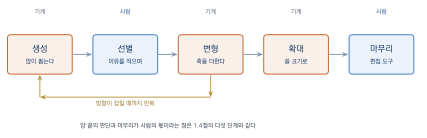
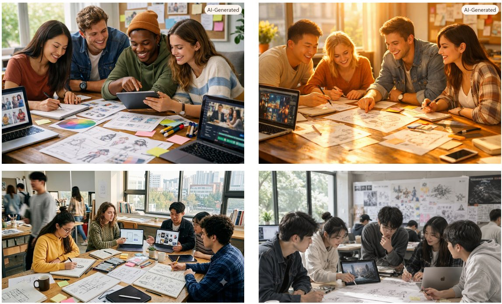
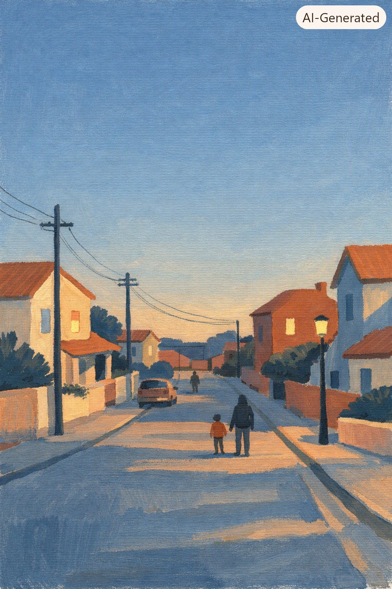

AI 이미지 생성
이 장을 마치면
- 주요 이미지 생성 도구의 특성과 차이를 알고 목적에 맞게 고를 수 있다.
- 생성-선별-수정으로 이어지는 기본 작업 흐름을 익힌다.
- 화풍과 매체를 프롬프트로 지정할 수 있다.
- 구도·시점·조명을 의도대로 통제할 수 있다.
- 해상도와 종횡비를 용도에 맞게 설정하고 결과를 확대할 수 있다.
이제 본격적으로 만든다. 이 장은 이 책에서 가장 실습 비중이 높은 장 가운데 하나이며, 여기서 익히는 작업 흐름은 이후 웹툰·영상 작업의 토대가 된다. 중요한 것은 한 번에 좋은 결과를 얻는 요령이 아니라, 원하는 방향으로 결과를 밀어 가는 방법이다.
6.1 이미지 생성 도구의 지형
이미지 생성 도구는 수십 가지가 있고 매달 새로 생긴다. 다행히 전부 알 필요는 없다. 요금 방식으로 셋, 성격으로 셋 정도만 구분해 두면 필요할 때 고를 수 있다.
요금 방식으로 나누기
완전 무료. 계정만 있으면 하루 몇 회 또는 일정 한도 안에서 쓸 수 있다. 결과를 저장하고 상업적으로 쓰는 데도 대체로 제약이 적다. 수업 실습에는 이것으로 충분하다.
무료 크레딧. 가입 시 또는 매일 일정량의 크레딧을 주고 소진하면 기다리거나 결제해야 한다. 고급 기능이 열려 있는 경우가 많아 실험용으로 좋다. 대신 크레딧을 언제 쓸지 계획해야 한다.
유료 전용. 월 구독으로 무제한에 가깝게 쓰거나 고급 제어 기능을 얻는다. 실무를 시작하면 결국 하나쯤 필요해진다.
계정만 있으면 이미지를 만들 수 있다. 하루 우선 처리 횟수가 정해져 있고 소진 후에도 느리게나마 생성된다. 프롬프트를 자연스러운 문장으로 써도 잘 알아듣는 편이며, 사진풍과 일러스트풍 모두 무난하다. 이 책의 6장 실습 기본 도구로 삼는다.
계정을 만들면 하루 일정량을 무료로 쓸 수 있다. 짧게 적은 프롬프트를 상세한 묘사로 자동 확장해 보여 주는 기능이 있어, 그 문장을 읽는 것만으로 어휘를 늘리는 데 유용하다. 간판이나 로고처럼 짧은 영문 글자를 비교적 정확히 그려 넣는 편이지만 한글은 여전히 깨지므로, 6.6절의 원칙대로 최종 글자는 편집 도구에서 얹는다.
1.5절에서 만든 계정을 그대로 쓴다. 대화 도중에 이미지를 만들고 말로 고쳐 달라고 이어서 요청할 수 있는 것이 강점이다. 무료 계정은 하루 생성 횟수가 적어 여러 장을 뽑는 탐색 단계에는 부족하다.
구글 계정만 있으면 된다. 이미지를 올려 두고 고칠 부분을 말로 지시하는 작업이 무료 범위에서도 되며, 역시 하루 한도가 있다.
이 둘은 앞의 두 도구와 성격이 다르다. 대화형 도구는 우리가 쓴 문장을 그대로 모델에 넣지 않고 알아서 길게 풀어써서 넣는 경우가 많다. 처음에는 편하지만, 4장에서 배울 좌표 지정의 효과가 흐려진다. 같은 프롬프트를 넣고도 왜 다른 결과가 나왔는지 설명하기 어려워지기 때문이다. 무엇이 반영되고 무엇이 무시되는지 보려면 전용 이미지 도구가 낫고, 빠르게 고쳐 가며 대화하려면 이쪽이 낫다.
라이선스를 확보한 데이터로 학습했다고 밝힌 모델이다. 5.6절에서 말한 상업적 이용 부담이 적은 선택지이며, 결과물에 대한 면책 조항도 함께 제공한다. 표현의 폭은 다른 도구보다 좁을 수 있다.
매일 회복되는 토큰으로 쓴다. 7장에서 다룰 구조 지정과 캐릭터 참조 기능이 무료 범위에서도 상당 부분 열려 있어, 제어를 배우기에 적합하다.
그리는 동안 실시간으로 이미지가 따라오는 방식이 특징이다. 스케치를 즉시 이미지로 바꾸는 작업에 강해, 손으로 그릴 수 있는 학생에게 특히 유리하다.
성격으로 나누기
같은 프롬프트를 넣어도 도구마다 결과가 다르다는 것은 3.5절에서 확인했다. 실무에서 구분하는 축은 대체로 셋이다.
| 축 | 한쪽 끝 | 다른 쪽 끝 |
|---|---|---|
| 기본 성향 | 사진처럼 그린다 | 일러스트처럼 그린다 |
| 지시 반영 | 적은 대로 다 넣는다 | 알아서 예쁘게 정리한다 |
| 제어 기능 | 프롬프트만 받는다 | 마스크·포즈·참조를 받는다 |
표 6.1의 세 축에 자기가 쓰는 도구들이 어디쯤 있는지 표시해 두면, 작업마다 무엇을 열지 고민할 일이 줄어든다. 3장 실습 3-4의 비교표가 그 자료다.
무료로 어디까지 되는가
솔직하게 정리하자. 이 수업의 모든 과제는 무료 도구로 완주할 수 있다. 구체적으로 다음이 무료 범위에서 가능하다.
- 프롬프트로 이미지 생성, 여러 장 뽑아 고르기
- 화풍·구도·조명 지정
- 기본적인 종횡비 선택
- 어느 정도의 부분 수정(도구에 따라)
반면 무료로는 어려운 것들도 분명하다.
- 고해상도 출력. 인쇄용 크기는 대개 유료다.
- 정밀한 구조 제어. 포즈나 윤곽을 정확히 지정하는 기능(7.4절).
- 대량 생성. 수십 장을 빠르게 뽑아야 하는 작업.
- 일관성 유지 기능. 캐릭터를 여러 장면에 반복 등장시키는 전용 기능(7.5절).
- 워터마크 제거와 상업적 이용. 서비스에 따라 다르다.
유료로 넘어가는 시점은 대체로 같은 작업을 반복하기 시작할 때다. 한 번 만들어 보는 단계에서는 무료로 충분하지만, 의뢰를 받아 열 장을 같은 톤으로 만들어야 하는 순간부터 무료 도구의 한계가 시간 낭비로 바뀐다. 취미와 일의 경계가 대략 여기다.
여러 도구를 함께 쓰기
한 도구만 고집할 필요가 없다. 실무에서는 대개 섞어 쓴다. 흔한 조합은 이렇다.
1. 탐색 무료·빠른 도구로 방향을 잡는다 (30~50장 생성)
2. 확정 방향이 정해지면 제어가 좋은 도구로 옮긴다
3. 수정 부분 수정 기능이 있는 도구에서 다듬는다
4. 마무리 Photopea/Canva에서 자르고 합치고 글자를 얹는다3.5절에서 말한 탐색은 싸고 빠르게, 마무리는 좋은 도구로가 이 형태로 나타난다. 다음 절에서 이 흐름을 실제 작업으로 따라가 본다.
6.2 기본 작업 흐름
이 절부터 6장 끝까지 하나의 과제를 함께 진행한다. 주제는 학과 홍보 포스터의 메인 이미지다. 각자 자기 학과나 동아리, 관심 있는 대상으로 바꾸어 따라오면 된다.
다섯 단계

그림 6.1의 흐름이다. 각 단계에서 하는 일과, 흔히 저지르는 실수를 함께 본다.
1단계. 생성: 많이 뽑는다
가장 흔한 실수는 두세 장 만들어 보고 실망하는 것이다. 1.4절에서 말했듯 이 도구를 쓰는 일은 한 번에 맞히기가 아니라 여러 번 뽑아 고르기다.
첫 프롬프트는 짧게 시작한다. 4.2절의 다섯 축 중 주제와 세부만 넣는다.
university students working together on a creative project,
sketches and screens on a large table, natural daylight
이 프롬프트로 최소 열 장을 만든다. 목적은 좋은 결과를 얻는 것이 아니라 모델이 이 주제를 어떻게 이해하는지 보는 것이다. 어떤 요소가 저절로 따라오는지, 무엇이 자꾸 빠지는지 관찰한다.
탐색 단계의 결과는 전부 버릴 각오로 만든다. 여기서 얻는 것은 이미지가 아니라 정보다. 아깝다고 붙잡고 다듬기 시작하면 방향을 잘못 잡은 채 시간을 쓰게 된다.
2단계. 선별: 이유를 적으며 고른다
열 장 중 두세 장을 고른다. 이때 고른 이유와 버린 이유를 한 줄씩 적는다. 1장 실습 1-4에서 연습한 것이다.
후보 03 O 인물 셋의 배치가 안정적. 손이 잘 나옴
후보 07 O 빛이 좋다. 다만 화면이 너무 비었다
후보 01 X 인물이 카메라를 봐서 연출 사진 같다
후보 05 X 책상 위가 산만하다
후보 09 X 분위기는 좋은데 학생이 아니라 회사원처럼 보인다버린 이유가 다음 프롬프트의 재료가 된다. 위 기록에서 세 가지 개선점이 바로 나온다. 시선을 카메라에서 돌릴 것, 책상 위를 정리할 것, 나이대를 명시할 것.
3단계. 변형: 축을 하나씩 더한다
선별에서 얻은 정보를 프롬프트에 반영한다. 4.2절의 나머지 축(스타일·구성·제약)을 여기서 채운다.
three university students in their early twenties
collaborating on a creative project,
looking at their work rather than the camera,
a few sketches and one open laptop on a clean wooden table,
soft daylight from a large window on the left,
warm and unposed atmosphere,
editorial photography, medium shot, shallow depth of field,
vertical composition 3:4이 프롬프트로 다시 열 장을 뽑는다. 나아졌다면 방향이 맞은 것이고, 오히려 나빠졌다면 어느 구절이 방해했는지 하나씩 빼며 확인한다.
한 번에 여러 곳을 고치면 무엇이 효과가 있었는지 알 수 없다. 3장 실습 3-3에서 배운 대로 시드를 고정하고 한 번에 한 축씩 바꾸는 것이 원칙이다. 다만 탐색이 급할 때는 여러 개를 한꺼번에 바꾸고 시드를 풀어 두어도 좋다. 언제 통제하고 언제 풀지 아는 것이 요령이다.
4단계. 확대: 쓸 크기로 만든다
최종 후보가 정해지면 필요한 크기로 키운다. 6.5절에서 자세히 다룬다. 여기서는 순서만 기억하자. 확대는 마지막에 한다. 탐색 단계에서 고해상도로 뽑는 것은 시간과 크레딧 낭비다.
5단계. 마무리: 사람의 작업을 얹는다
생성으로 끝나지 않는다. 편집 도구에서 다음을 한다.
- 필요한 비율로 자르기
- 색과 대비 보정
- 거슬리는 부분 지우거나 덮기
- 글자·로고 얹기
- 인쇄용 또는 웹용으로 내보내기
5.2절에서 말했듯 이 단계는 품질뿐 아니라 권리를 위해서도 필요하다. 그리고 6장에서 확인하겠지만, 글자를 넣는 일은 어차피 여기서 해야 한다.
중간 결과를 남기는 습관
마지막으로 파일 관리를 짚어 둔다. 작업 중에는 다 기억날 것 같지만 사흘 뒤면 아무것도 기억나지 않는다.
poster_01_explore_03.png 탐색 단계 3번째
poster_02_selected_07.png 선별한 것
poster_03_refined_02.png 변형 후
poster_04_upscaled.png 확대본
poster_05_final.png 편집 완료
poster_prompts.txt 프롬프트와 시드 기록단계 번호를 앞에 두면 정렬만으로 작업 순서가 보인다. 13장에서 포트폴리오를 만들 때 이 파일들이 그대로 과정을 보여 주는 자료가 된다.
6.3 스타일 다루기
같은 대상도 어떤 매체와 화풍으로 표현하느냐에 따라 전혀 다른 것이 된다. 이 절에서는 스타일을 지정하는 어휘를 익힌다. 부록 B에 더 긴 목록이 있으니 여기서는 어떻게 조합하는지에 초점을 둔다.
매체를 먼저 정한다
스타일 지정에서 가장 큰 효과를 내는 것은 매체, 즉 무엇으로 그렸는가다. 이것 하나만 바꿔도 결과가 완전히 달라진다.
| 매체 | 영문 | 특징과 어울리는 용도 |
|---|---|---|
| 수채 | watercolor | 번짐과 여백. 서정적, 부드러운 홍보물 |
| 과슈 | gouache | 수채보다 진하고 불투명. 그림책, 포스터 |
| 유화 | oil painting | 두꺼운 붓자국. 고전적, 무게감 |
| 연필 | pencil sketch | 선 중심. 콘티, 초안, 습작 느낌 |
| 목탄 | charcoal drawing | 거친 명암. 강렬한 흑백 |
| 판화 | woodblock print | 단순한 면과 굵은 윤곽. 복고, 강한 인상 |
| 벡터 | flat vector illustration | 면과 선이 깨끗함. 인포그래픽, 앱 |
| 3D 렌더 | 3d render, octane | 입체적, 광택. 제품, 미래적 |
| 사진 | photography | 사실적. 인물, 제품, 다큐멘터리 |
| 픽셀아트 | pixel art | 격자 질감. 게임, 복고 |
표 6.2에서 하나를 고른 뒤, 그 매체 안에서 세부를 조절한다. 예를 들어 수채라면 soft bleeding edges(번짐), visible paper texture(종이 결), loose brushwork(느슨한 붓질)를 더할 수 있다.
장르와 용도를 더한다
매체가 무엇으로 그렸는가라면, 장르는 어디에 쓰이는 그림인가다. 이것을 넣으면 구도와 여백이 그 용도에 맞게 잡힌다.
concept art 게임·영화의 설정 그림. 넓은 화면, 분위기 중심
editorial illustration 잡지·기사 삽화. 개념적, 여백 있음
children's book illustration 그림책. 따뜻하고 단순
poster design 포스터. 글자 자리를 남기는 구도
storyboard 콘티. 단순화된 선, 컷 느낌
product photography 제품 사진. 깔끔한 배경, 균일한 조명
documentary photography 다큐. 자연스러운 순간, 거친 질감포스터를 만들 때는 반드시 poster design이나 negative space for text를 넣자. 그렇지 않으면 화면이 꽉 차게 나와 글자를 얹을 자리가 없다. 6.2절의 5단계에서 고생하지 않으려면 여기서 미리 정해야 한다.
시대와 사조
특정 시기의 느낌을 원할 때 쓴다. 미술사 지식이 여기서 직접 쓸모가 된다.
art nouveau 아르누보. 곡선, 식물 문양, 장식적
bauhaus 바우하우스. 기하학, 원색, 기능주의
mid-century modern 1950~60년대. 절제된 색, 단순한 형태
ukiyo-e 우키요에. 평면적 색면, 굵은 윤곽선
soviet propaganda poster 구성주의 포스터. 대각선 구도, 강한 색 대비
y2k aesthetic 2000년대 초. 금속 질감, 형광색
risograph print 리소 인쇄. 어긋난 색, 거친 점 질감사조 이름은 개별 작가 이름과 달리 누구의 것도 아니므로 5.3절의 문제가 생기지 않는다. 특정 작가를 떠올렸다면 그 작가가 속한 사조를 먼저 시도해 보자.
작가 이름 대신 특징 쓰기
5.3절의 원칙을 실제 프롬프트로 옮겨 보자. 다음은 어떤 화풍을 이름 없이 재현하는 예다.
in the style of [활동 중인 작가 이름], a quiet streeta quiet residential street at dusk,
gouache illustration with visible brush texture,
limited palette: dusty blue, warm cream, muted terracotta,
simplified architecture with soft rounded edges,
no visible faces, small human figures for scale,
flat lighting with long gentle shadows,
generous empty sky in the upper third
여섯 개의 항목이 하나의 화풍을 만든다. 그리고 이 여섯 개는 각각 조절할 수 있다. dusty blue를 다른 색으로, rounded edges를 각진 것으로 바꾸면 곧 다른 화풍이 된다. 이름을 쓰면 통째로 가져오지만, 특징을 쓰면 재료로 쓸 수 있다.
스타일을 섞을 때
3.3절의 보간을 떠올리자. 두 스타일을 섞는 것은 강력하지만 자주 실패한다. 요령이 있다.
매체는 하나만. 수채와 3D 렌더를 동시에 요구하면 대개 어느 쪽도 아닌 결과가 나온다. 매체는 하나로 정하고, 다른 스타일에서는 색이나 구도 같은 다른 층위를 가져온다.
비율을 명시한다. 도구가 가중치를 지원한다면 (watercolor:0.7), (woodblock print:0.3)처럼 한쪽에 무게를 둔다. 5대 5는 대개 실패한다.
안 되면 두 번에 나눈다. 한 스타일로 만든 뒤 7장의 참조 기법으로 다른 스타일을 입히는 편이 확실하다.
말로 설명하기 어려운 화풍은 이미지를 참조로 주는 편이 훨씬 정확하다. 3.3절에서 본 멀티모달의 쓰임이며, 7.2절에서 본격적으로 다룬다. 다만 참조로 쓰는 이미지 역시 남의 저작물이라면 5장의 논의가 그대로 적용된다는 점을 잊지 말자. 자기가 찍거나 그린 것을 참조로 쓰는 것이 가장 안전하고, 결과도 자기 것에 가까워진다.
6.4 구도와 조명 다루기
같은 대상, 같은 화풍이라도 어떻게 담느냐에 따라 전달되는 감정이 달라진다. 이 절의 어휘는 사진과 영화에서 온 것이며, 11장 영상 작업에서 그대로 다시 쓴다.
샷 크기: 얼마나 가까이
대상을 화면에 얼마나 크게 담을지를 정한다. 가장 먼저 정해야 할 것이다.
| 한국어 | 영문 | 전달되는 것 |
|---|---|---|
| 익스트림 롱샷 | extreme wide shot | 대상이 아주 작다. 고립감, 규모 |
| 롱샷·전신 | wide shot, full shot | 인물 전체와 배경. 상황 설명 |
| 미디엄샷 | medium shot | 상반신. 대화, 관계 |
| 클로즈업 | close-up | 얼굴. 감정 |
| 익스트림 클로즈업 | extreme close-up | 눈, 손, 물건 일부. 긴장, 강조 |
표 6.3에서 아래로 갈수록 정보는 줄고 감정은 커진다. 포스터에 인물의 상황을 설명해야 한다면 위쪽을, 감정을 전달해야 한다면 아래쪽을 고른다.
앵글: 어디서 보는가
카메라의 높이가 대상과의 관계를 만든다.
eye level 눈높이. 중립적, 동등한 관계
low angle 앙각(아래에서 위로). 대상이 크고 위압적으로
high angle 부감(위에서 아래로). 대상이 작고 취약하게
bird's eye view 새의 시점. 전체 배치, 패턴
dutch angle 기울어진 화면. 불안, 긴장
over-the-shoulder 어깨 너머. 관찰자의 시선, 대화 장면앵글은 인물의 지위와 감정을 바꾸는 가장 빠른 수단이다. 같은 인물을 앙각으로 찍으면 당당해 보이고 부감으로 찍으면 위축되어 보인다. 홍보물에서 대상을 어떻게 보이게 할지 정할 때 먼저 손대야 할 값이다.
렌즈와 심도
사진 용어를 쓰면 공간감이 훨씬 정확해진다.
wide angle lens, 24mm 광각. 공간이 넓어 보이고 원근이 과장됨
50mm lens 표준. 눈으로 보는 것과 비슷
85mm portrait lens 인물용. 배경이 압축되고 얼굴이 자연스러움
telephoto, 200mm 망원. 원근이 눌리고 배경이 가까워 보임
shallow depth of field 얕은 심도. 배경이 흐려짐
deep focus 전체가 선명함
bokeh 흐려진 배경의 빛망울인물 사진 느낌을 원한다면 85mm portrait lens, shallow depth of field가 거의 언제나 통한다. 반대로 좁은 방을 넓어 보이게 하려면 wide angle lens를 쓴다.
조명: 가장 큰 차이를 만드는 것
경험이 쌓일수록 조명에 손대는 시간이 길어진다. 구도보다 조명이 분위기를 더 크게 좌우하기 때문이다.
| 종류 | 영문 | 느낌 |
|---|---|---|
| 부드러운 자연광 | soft natural light, window light | 차분함, 일상 |
| 골든아워 | golden hour, warm sunset light | 따뜻함, 향수 |
| 블루아워 | blue hour, twilight | 고요함, 쓸쓸함 |
| 역광 | backlit, silhouette | 극적, 신비 |
| 림라이트 | rim light | 윤곽이 빛남. 인물 분리 |
| 측광 | side lighting | 입체감, 질감 강조 |
| 강한 직사광 | harsh direct sunlight | 선명한 그림자, 긴장 |
| 흐린 날 | overcast, diffused light | 그림자 없음, 평온 |
| 네온 | neon lighting | 도시, 밤, 화려함 |
| 촛불 | candlelight | 친밀함, 온기 |
조명 어휘를 여러 개 겹쳐 쓰면 서로 충돌한다. golden hour와 neon lighting을 함께 넣으면 어느 쪽도 아닌 결과가 나온다. 조명은 하나만 지정하고, 필요하면 보조광을 한 줄로 덧붙이는 정도가 안전하다.
구도의 규칙
마지막으로 화면 안의 배치다.
rule of thirds 삼분할. 안정적이고 무난함
centered composition 중앙 배치. 정면성, 대칭, 강한 인상
symmetrical 대칭. 정돈됨, 인공적
leading lines 유도선. 시선을 한 곳으로 모음
framing 액자 구도. 창·문 너머로 보는 형태
negative space 여백. 고요함, 글자 자리
low horizon 낮은 지평선. 하늘이 넓어짐포스터 작업에서는 negative space가 특히 중요하다. 6.3절에서 말했듯 글자 자리를 미리 확보해 두지 않으면 나중에 곤란해진다.
하나만 바꿔 보기
이 절의 어휘를 몸에 붙이는 방법은 하나다. 시드를 고정하고 한 축만 바꿔 가며 비교하는 것이다.
기준: three students working together, editorial photography, 시드 고정
변형 A + wide shot, eye level
변형 B + close-up, low angle
변형 C + over-the-shoulder, shallow depth of field
변형 D + bird's eye view, deep focus
네 장을 나란히 놓고 각각이 전달하는 인상을 한 줄씩 적는다.이 실험이 이 장 실습의 핵심이며, 여기서 얻은 감각이 9장 웹툰의 컷 연출과 11장 영상의 카메라 지시로 곧장 이어진다.
6.5 해상도, 종횡비, 업스케일
만든 이미지를 실제로 쓰려면 크기와 비율이 맞아야 한다. 이 절은 재미없지만, 여기서 실수하면 작업을 처음부터 다시 해야 한다.
종횡비는 처음에 정한다
종횡비aspect ratio는 가로와 세로의 비율이다. 나중에 잘라서 맞출 수도 있지만, 그러면 구도가 망가진다. 어디에 쓸지 정하고 그 비율로 생성하는 것이 원칙이다.
| 용도 | 비율 | 메모 |
|---|---|---|
| 인스타그램 피드 | 1:1 또는 4:5 | 4:5가 화면을 더 많이 차지한다 |
| 인스타·틱톡 스토리 | 9:16 | 세로 전체. 위아래 여백에 UI가 겹친다 |
| 유튜브 썸네일 | 16:9 | 작게 보이므로 요소를 크게 |
| 가로 발표 자료 | 16:9 | |
| 인쇄 포스터 (A 계열) | 1:1.414 | A4·A3 공통. 도구에서 3:4로 잡고 자른다 |
| 웹 배너 | 3:1 등 다양 | 실제 픽셀 크기를 먼저 확인 |
| 책·잡지 표지 | 3:4 내외 | 판형에 따라 다름 |
여러 곳에 쓸 이미지는 가장 넓은 비율로 만들고 잘라 쓴다. 16:9로 만들어 두면 1:1과 9:16으로 자를 수 있지만, 1:1로 만든 것을 16:9로 늘릴 수는 없다. 이때 중요한 요소를 화면 가운데에 몰아 두면 어느 비율로 잘라도 살아남는다.
해상도의 현실
화면용과 인쇄용은 요구 수준이 다르다.
화면용은 대체로 여유가 있다. SNS는 긴 변 1080–2048픽셀이면 충분하고, 무료 도구의 기본 출력이 대개 이 범위에 들어간다.
인쇄용은 사정이 다르다. 인쇄는 보통 300dpi를 요구하는데, 이는 A4 크기에 긴 변 약 3500픽셀이 필요하다는 뜻이다. 무료 도구의 1024픽셀 출력으로는 명함 크기밖에 안 된다.
| 크기 | 필요 픽셀(긴 변) | 메모 |
|---|---|---|
| 엽서 (A6) | 약 1750 | 무료 출력 + 가벼운 확대로 가능 |
| A4 | 약 3500 | 확대 필요 |
| A3 | 약 5000 | 확대 필수, 품질 확인 필요 |
| 대형 포스터 | 그 이상 | 멀리서 보므로 dpi를 낮춰 잡아도 된다 |
표 6.6의 마지막 줄이 실무의 요령이다. 대형 인쇄물은 관람 거리가 멀어 150dpi 정도로도 충분한 경우가 많다. 인쇄소에 실제 관람 거리를 말하고 상의하면 필요 이상으로 키우지 않아도 된다.
업스케일: 없던 것이 생긴다
업스케일upscaling은 이미지를 키우는 작업이다. 단순히 픽셀을 늘리는 것이 아니라, 인공지능이 없던 디테일을 만들어 채운다. 이 점이 장점이자 함정이다.
장점은 분명하다. 흐릿하던 부분이 선명해지고 질감이 살아난다.
함정도 분명하다. 만들어진 디테일은 원본에 없던 것이다. 인물의 얼굴이 미묘하게 달라지거나, 배경의 글자가 엉뚱한 모양으로 또렷해지거나, 없던 무늬가 생긴다. 그래서 업스케일 후에는 반드시 원본과 나란히 놓고 확인해야 한다.
얼굴이 있는 이미지는 특히 주의한다. 업스케일 과정에서 인상이 바뀌는 일이 흔하다. 9장의 웹툰 작업처럼 여러 컷의 인물이 같아야 하는 경우, 업스케일을 모든 컷에 같은 설정으로 적용해야 통일성이 유지된다.
무료로 크게 만들기
무료 범위에서 쓸 수 있는 방법들이다.
무료 업스케일 도구를 쓴다. 전용 웹 서비스들이 있고, 편집 도구에도 확대 기능이 들어 있다. 2배까지는 대체로 무난하고 4배부터는 결과를 잘 봐야 한다.
타일로 나눠 만든다. 넓은 이미지를 한 번에 만들지 말고, 부분을 여러 장 만들어 편집 도구에서 이어 붙인다. 7.3절의 아웃페인팅과 함께 쓰면 효과적이다.
인쇄 크기를 줄인다. A3를 고집할 이유가 없다면 A4나 엽서로 바꾼다. 작아도 잘 만든 것이 크고 뭉개진 것보다 낫다.
벡터로 다시 그린다. 로고나 단순한 도형이라면, 생성한 이미지를 참고해 편집 도구에서 벡터로 다시 그린다. 이러면 크기 제한이 사라지고, 5.2절의 사람의 기여도 확실해진다.
파일 형식
마지막으로 짧게. PNG는 화질 손실이 없고 투명 배경을 지원한다. 작업 중간 파일과 로고에 쓴다. JPG는 용량이 작아 웹 게시에 적합하지만 저장할 때마다 화질이 조금씩 나빠지므로 최종 단계에서 한 번만 변환한다. 인쇄소에 넘길 때는 요구 형식을 먼저 묻는다.
6.6 안 될 때의 해결법
이 절은 작업 중에 펴 놓고 보는 용도로 썼다. 증상별로 원인과 대처를 짝지어 두었으며, 원인은 대부분 3장에서 배운 원리로 설명된다.
증상별 대처표
| 증상 | 대처 |
|---|---|
| 프롬프트를 무시한다 | 가이던스 값을 올린다. 요소를 줄인다. 중요한 것을 프롬프트 앞으로 옮긴다. 가중치를 준다 |
| 글자가 깨진다 | 생성으로 해결하지 말고 편집 도구에서 얹는다. 프롬프트에서 글자 언급을 아예 뺀다 |
| 손가락 개수가 이상하다 | 손이 보이지 않는 구도로 바꾼다. 인페인팅으로 손만 다시 그린다(7.3절) |
| 원하지 않은 요소가 계속 들어온다 | 그 말을 프롬프트에서 뺀다. 네거티브 프롬프트에 넣는다. 시드를 바꾼다 |
| 너무 평범하다 | 구체적 세부를 넣는다. 조명·앵글을 특이하게 지정한다. 매체를 바꾼다 |
| 인물이 셋인데 둘만 나온다 | 숫자를 강조하거나, 인물을 따로 만들어 합성한다 |
| 생성이 거부된다 | 어느 낱말이 걸렸는지 하나씩 빼며 확인한다. 우회 표현을 찾는다 |
| 매번 결과가 너무 다르다 | 시드를 고정한다. 프롬프트가 짧아 모델에게 맡긴 부분이 많은 것이다 |
| 색이 타 버린 것 같다 | 가이던스 값을 낮춘다. 품질 관련 낱말을 줄인다 |
| 얼굴이 뭉개진다 | 얼굴이 화면에서 너무 작다. 샷을 가까이 잡거나 부분 확대 후 합성한다 |
왜 그런가: 원리로 이해하기
표 6.7의 몇 가지는 이유를 알아 두면 응용이 된다.
글자가 깨지는 이유. 확산 모델은 이미지를 형태의 배치로 다룬다. 글자는 형태이면서 동시에 정해진 순서와 의미를 갖는 기호인데, 모델에게는 그저 글자처럼 생긴 무늬일 뿐이다. 그래서 멀리서 보면 글자 같지만 읽으면 말이 안 되는 결과가 나온다. 최근 모델들이 짧은 단어는 제법 처리하지만, 한글은 특히 어렵다. 학습 데이터에 한글 이미지가 적었기 때문이다. 한글 글자는 편집 도구에서 얹는 것을 원칙으로 삼자.
프롬프트를 무시하는 이유. 3.2절의 가이던스 스케일이 낮으면 모델이 자유롭게 그린다. 또 프롬프트에 요소가 너무 많으면 모두를 반영할 수 없어 일부를 버린다. 한 프롬프트에 통제할 요소는 대여섯 개가 한계라고 생각하고, 그 이상이 필요하면 7장의 제어 기법으로 넘어간다.
손가락 문제. 손은 각도에 따라 모양이 극단적으로 달라지고 학습 데이터에서도 다양하게 나타난다. 게다가 사람은 손의 이상함을 아주 예민하게 알아챈다. 정면으로 붙는 것보다 피하는 편이 실용적이다.
거부되었을 때
3.5절에서 말했듯 서비스마다 막는 기준이 다르다. 거부되었다면 다음 순서로 확인한다.
- 실존 인물의 이름이 들어갔는가 → 뺀다
- 폭력·신체·의료 관련 낱말이 들어갔는가 → 다른 말로 바꾼다
- 상표나 캐릭터 이름이 들어갔는가 → 뺀다
- 아무것도 짚이지 않는가 → 낱말을 절반씩 나누어 어느 쪽이 걸리는지 좁힌다
우회 표현을 찾는 것과 금지된 것을 뚫으려 하는 것은 다르다. 미술사의 누드를 다루려다 막혀 표현을 바꾸는 것은 창작 기술이지만, 금지된 내용을 만들려고 표현을 우회하는 것은 이용약관 위반이며 계정이 정지될 수 있다. 5장의 기준이 여기서도 그대로 적용된다.
그래도 안 될 때
세 번 이상 시도했는데도 방향이 잡히지 않는다면, 문제가 프롬프트에 있지 않을 가능성이 높다. 다음을 점검한다.
도구를 바꿔 본다. 3.5절에서 보았듯 모델마다 잘하는 것이 다르다. 이 도구에서 안 되는 것이 다른 도구에서는 한 번에 되기도 한다.
프롬프트를 진단받는다. 4.4절의 진단 요청 방식이다.
제어 기법으로 넘어간다. 프롬프트만으로 통제할 수 있는 것에는 한계가 있다. 구체적인 포즈, 정확한 배치, 같은 인물의 반복 등장은 애초에 프롬프트의 영역이 아니다. 7장이 그 이야기다.
생성을 포기하고 편집으로 해결한다. 글자, 로고, 정확한 색상 코드, 특정 위치의 요소는 편집 도구에서 하는 것이 언제나 빠르고 정확하다. 인공지능으로 다 하려는 고집이 가장 큰 시간 낭비인 경우가 많다.
이 장의 실습은 하나의 과제로 이어진다. 6주차 과제인 콘셉트 이미지 10장이 최종 결과물이다.
실습 6-1. 다섯 단계 완주하기
6.2절의 흐름대로 한 가지 주제를 끝까지 진행한다. 주제는 자기 학과·동아리·관심 대상 중에서 고른다.
주제: ____________________ 용도: ____________ 비율: ______
1단계 생성 탐색 프롬프트: ____________________ 생성 ___장
2단계 선별 고른 것 ___장 / 버린 이유 기록 □ 완료
3단계 변형 보강한 축: □주제 □세부 □스타일 □구성 □제약
생성 ___장
4단계 확대 최종 크기: ______ x ______ px
5단계 마무리 편집 도구: ____________ 한 작업: ____________각 단계의 대표 이미지를 한 장씩 남겨 과정을 보여 주는 다섯 장을 만든다. 이것이 13장 포트폴리오의 재료가 된다.
실습 6-2. 매체 바꿔 보기
같은 프롬프트, 같은 시드로 매체만 바꿔 여섯 장을 만든다.
기준 프롬프트: ____________________ 시드: ________
A watercolor
B gouache
C oil painting
D flat vector illustration
E 3d render
F documentary photography
가장 주제에 어울린 것: ____ 이유: ____________________
가장 뜻밖이었던 것: ____ 이유: ____________________실습 6-3. 구도와 조명 실험
6.4절 끝의 비교 실험을 수행한다. 시드를 고정하고 구도 네 가지, 조명 네 가지를 각각 바꿔 총 여덟 장을 만든다.
[구도]
wide shot / eye level 인상: ____________
close-up / low angle 인상: ____________
over-the-shoulder 인상: ____________
bird's eye view 인상: ____________
[조명]
soft window light 인상: ____________
golden hour 인상: ____________
backlit silhouette 인상: ____________
neon lighting 인상: ____________
구도와 조명 중 인상을 더 크게 바꾼 쪽: ____________실습 6-4. 화풍을 특징으로 분해하기
좋아하는 이미지 한 장을 고른다(작가 이름은 쓰지 않는다). 6.3절의 방식으로 그 화풍을 여섯 개 항목으로 분해해 프롬프트를 만들고 생성한다. 그다음 항목 두 개만 바꿔 자기 취향의 변형을 만든다.
원본 인상: ____________________
매체: ________________________
색: ________________________
선·형태: ________________________
질감: ________________________
조명: ________________________
구도 습관: ________________________
바꾼 두 항목: ____________ 과 ____________
바꾼 뒤의 인상 변화: ____________________실습 6-5. 안 되는 것 확인하기
6.6절의 표를 직접 검증한다. 다음을 각각 시도하고 결과를 기록한다.
a bookstore sign that reads "책과 사람" in Koreana person holding up five fingers, palm facing the camera, close-upexactly three red apples and two green pears on a white table각각 네 번씩 시도하고 성공률을 적는다. 실패한 것에 대해 6.6절의 어느 대처가 적용되는지 쓰고, 그 대처를 실제로 해 본다.
실습 6-6. 콘셉트 이미지 10장 (6주차 과제)
앞의 실습들을 종합해, 하나의 주제로 서로 어울리는 콘셉트 이미지 10장을 완성한다. 조건은 다음과 같다.
- 10장이 하나의 묶음으로 보여야 한다 (매체·색·조명의 통일)
- 최소 세 가지 다른 샷 크기가 포함되어야 한다
- 최소 한 장은 글자를 얹을 여백이 확보되어야 한다
- 프롬프트와 시드 기록을 함께 제출한다
- 5.6절의 점검 목록을 통과해야 한다
첫 번째 조건이 가장 어렵다. 10장을 각각 잘 만드는 것과 10장이 한 묶음으로 보이게 만드는 것은 다른 일이며, 후자가 7장에서 배울 일관성 문제의 예고편이다.
6장 요약
- 도구는 요금 방식으로 완전 무료·무료 크레딧·유료 전용, 성격으로 기본 성향·지시 반영·제어 기능 세 축으로 구분하면 충분하다. 수업 과제는 무료 도구로 완주할 수 있다.
- 무료로 어려운 것은 고해상도 출력, 정밀한 구조 제어, 대량 생성, 캐릭터 일관성 기능이다. 유료로 넘어갈 시점은 대체로 같은 작업을 반복하기 시작할 때다.
- 작업 흐름은 생성 → 선별 → 변형 → 확대 → 마무리 다섯 단계다. 탐색 단계의 결과는 전부 버릴 각오로 만들며, 여기서 얻는 것은 이미지가 아니라 정보다.
- 선별할 때 버린 이유를 적으면 그것이 다음 프롬프트의 재료가 된다. 확대는 마지막에 하고, 마무리에서 사람의 작업을 반드시 얹는다.
- 스타일 지정에서 가장 큰 효과를 내는 것은 매체다. 그다음 장르와 시대·사조를 더한다. 포스터라면 글자 자리를 미리 확보해야 한다.
- 작가 이름 대신 특징을 쓰면 윤리적 부담이 없을 뿐 아니라 각 항목을 재료로 조절할 수 있다. 사조 이름은 누구의 것도 아니므로 안전한 대안이다.
- 구도 어휘는 샷 크기(정보 대 감정), 앵글(대상의 지위), 렌즈와 심도(공간감), 조명(분위기), 구도 규칙(배치)의 다섯 층위로 나뉜다. 조명 어휘는 겹쳐 쓰면 충돌하므로 하나만 지정한다.
- 종횡비aspect ratio는 처음에 정한다. 여러 곳에 쓸 이미지는 가장 넓은 비율로 만들고 잘라 쓰며, 중요한 요소를 가운데 몰아 둔다.
- 인쇄는 300dpi 기준으로 A4에 긴 변 약 3500픽셀이 필요하다. 다만 대형 인쇄물은 관람 거리가 멀어 낮은 dpi로도 충분하다.
- 업스케일upscaling은 없던 디테일을 만들어 채운다. 선명해지는 대신 얼굴이나 글자가 바뀔 수 있으므로 원본과 대조해 확인한다.
- 글자, 특히 한글은 생성으로 해결하지 말고 편집 도구에서 얹는다. 확산 모델에게 글자는 의미가 아니라 무늬이기 때문이다.
- 한 프롬프트로 통제할 요소는 대여섯 개가 한계다. 그 이상이 필요하면 프롬프트가 아니라 7장의 제어 기법으로 넘어간다. 인공지능으로 다 하려는 고집이 가장 큰 시간 낭비인 경우가 많다.
6장 연습문제
- ★ 이미지 작업의 다섯 단계를 순서대로 쓰고, 각 단계에서 하는 일을 한 문장씩 설명하시오.
- ★ 다음 용도에 알맞은 종횡비를 각각 쓰시오.
- 인스타그램 스토리
- 유튜브 썸네일
- 인스타그램 피드에서 화면을 가장 많이 차지하는 비율
- ★ 다음 증상의 대처를 각각 하나씩 쓰시오.
- 프롬프트에 적은 요소를 자꾸 빠뜨린다
- 매번 결과가 너무 달라 통제가 안 된다
- 색이 타 버린 것처럼 진하게 나온다
- ★★ 이미지 생성 모델이 글자를 제대로 만들지 못하는 이유를 3장에서 배운 원리로 설명하고, 한글이 특히 더 어려운 이유를 덧붙이시오.
- ★★ 다음 프롬프트는 포스터용으로 만들어졌으나 완성 후 글자를 얹을 자리가 없었다. 무엇이 빠졌는지 지적하고 고쳐 쓰시오.
a mountain landscape at sunrise, oil painting, dramatic clouds, vivid colors - ★★ A3 크기(300dpi)로 인쇄할 이미지에 필요한 픽셀 수를 답하고, 무료 도구의 1024픽셀 출력으로 이를 확보하려면 어떤 방법들이 있는지 세 가지 쓰시오.
- ★★ 같은 인물 사진을
low angle과high angle로 각각 생성했을 때 전달되는 인상이 어떻게 달라지는지 설명하고, 학과 홍보물에서는 어느 쪽을 택할지 이유와 함께 답하시오. - ★★★ 실습 6-2에서 만든 여섯 개 매체 결과 중 가장 뜻밖이었던 것을 고르고, 왜 그런 결과가 나왔는지 3장의 원리와 6장의 어휘로 분석하시오.
- ★★★ 두 스타일을 섞으려 했으나 어느 쪽도 아닌 결과가 나오는 경우가 많다. 그 이유를 3.3절의 개념으로 설명하고, 6.3절이 제시한 세 가지 요령을 각각 언제 쓰는지 서술하시오.
- ★★★ 실습 6-6의 콘셉트 이미지 10장을 제출하고, 그중 10장을 하나의 묶음으로 보이게 하기 위해 통제한 요소가 무엇이었는지, 어떤 요소는 통제하지 못했는지 분석하시오. 통제하지 못한 요소는 7장의 어떤 기법으로 해결할 수 있을지도 예측해 보시오.